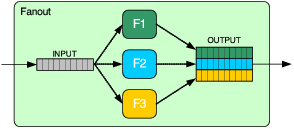

Next: Accumulator, Previous: Parallel, Up: MarSystem composites [Contents][Index]
A Fanout is another composite MarSytem that, like a Parallel, contains other MarSystem. It differs from a Parallel in that it takes a single observation and sends a copy of this observation to all the MarSystems inside of it. This is shown graphically below:
In the above diagram, we send a realvec with a single observation (and many samples) into the Fanout. The Fanout then makes a copy of this data for each of the MarSystems within in. In the above diagram, it makes a copy of the input observation and sends it to F1 (shown in green), F2 (shown in blue) and F3 (shown in yellow).
Thus, the input of the Fanout shown above is one observation (and many samples) and the output of the Fanout is three observations (and the same number of samples as the input had).
To build this system you would write code that would look something like:
MarSystem* fanout = mng.create("Fanout", "fanout");
fanout->addMarSystem(mng.create("Gain", "F1"));
fanout->addMarSystem(mng.create("Gain", "F2"));
fanout->addMarSystem(mng.create("Gain", "F3"));
One real-life example of using a Fanout is if you want to run many different kinds of algorithms on your data. For example, you might to run a series of different filterbanks on your audio. To do this you would write code that would look something like:
MarSystem* net = mng.create("Series", "net");
net->addMarSystem(mng.create("SoundFileSource", "src"));
MarSystem* filterbank = mng.create("Fanout", "filterbank");
filterbank->addMarSystem(mng.create("Filter", "cf8"));
filterbank->addMarSystem(mng.create("Filter", "cf12"));
filterbank->addMarSystem(mng.create("Filter", "cf18"));
filterbank->addMarSystem(mng.create("Filter", "cf20"));
net->addMarSystem(filterbank);